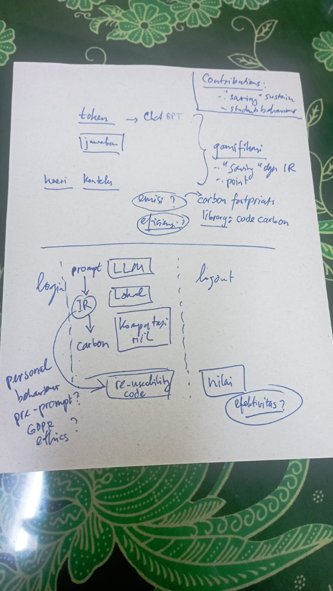
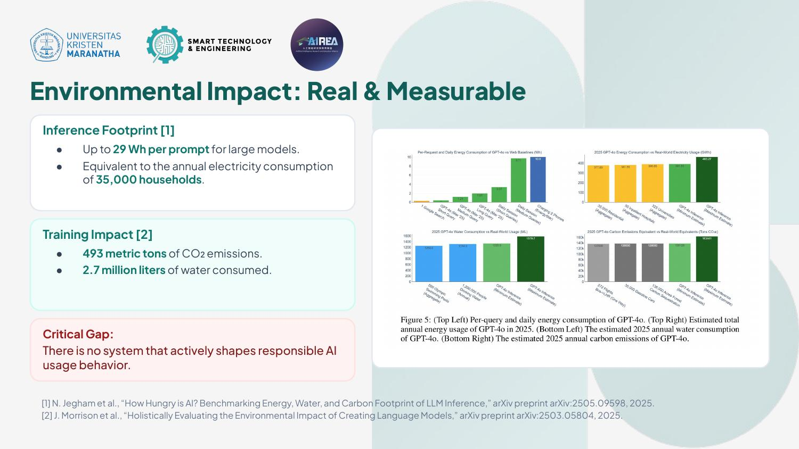
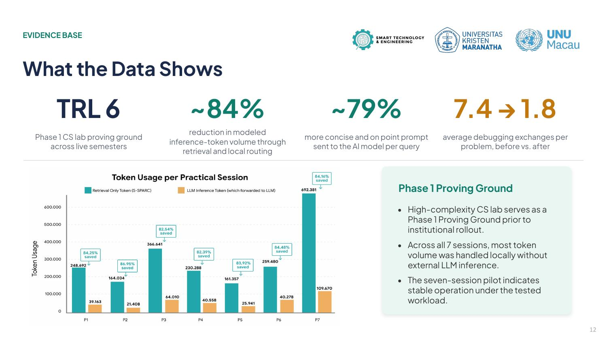
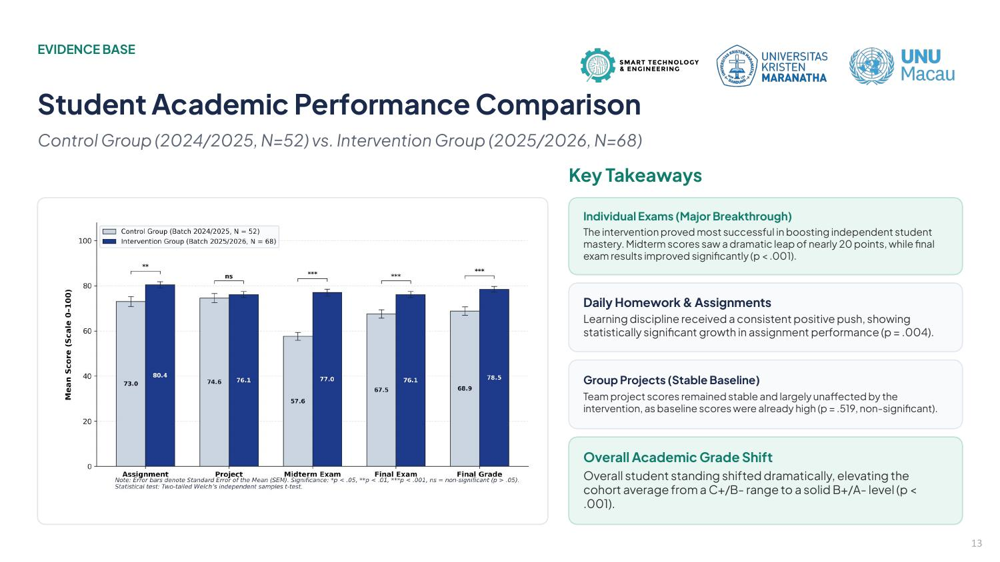

I still remember the date clearly: March 21, 2025, at 10 AM. I was called into the faculty office to meet three people that immediately made me think, "Okay, this isn't going to be small talk": Prof. Hapnes Toba, Ko Oscar Karnalim, and Ci Maresha Caroline.
The topic turned out to be something few people were seriously talking about at the time: the personal behavior behind "unnecessary prompting" to AI. Here's what I mean: lots of people (including students) ask ChatGPT questions that have already been answered before, or prompt without thinking first just because "it's easy, just ask the AI." It sounds harmless, but in aggregate, it piles up into massive compute loads, creating a real environmental footprint.
That discussion quickly turned into an intense brainstorming session. I still have the photo of our handwritten notes on paper from that morning:

prompt → LLM → IR (Information Retrieval) → carbon, notes on code reusability, all the way to open questions like "GDPR?", "ethics?", and gamification ideas using a "saving" and point system. Messy, but this was where the core framework of S-SPARC first took shape.
First MVP: 77% Token Savings
From those notes, I built the MVP and tested it right away through a pre-post controlled experiment with 20 IT lab staff. The results beat our expectations: we saw a 77% token savings. This early result became the foundation for my Master's thesis.
We didn't stop there. At the start of the even semester in 2026, I tested the idea again, this time in Prof. Hapnes Toba's Machine Learning class on a larger, more mature scale. That was where S-SPARC (Smart Personal Assistant for Responsible Consumption) as we know it today really took shape, tested with dozens of students and hitting much higher token savings through semantic knowledge reuse.
The Turning Point: After the Thesis Defense, June 30, 2026
The real turning point actually came after my thesis defense on June 30, 2026. The feedback and critique from the defense became the fuel to take S-SPARC from a "classroom research project" to a "real, scalable AI application."
One thing that made me take this even more seriously: a single prompt to a large model can draw up to 29 Wh of energy. Globally, that equals the annual power consumption of 35,000 households. That's not even counting the model training itself, which can reach 493 metric tons of CO₂ emissions and 2.7 million liters of water.

From there, several major technical changes came to life:
- Diagnostic gate (validating C-I-O-E: Context, Input, Output, Error Trace) before the AI agrees to answer: no more instant answers for lazy questions.
- Semantic caching with FAISS, using a multi-model embedding pipeline (weighted, double-normalized): if similarity is ≥0.90, the answer is served straight from the cache in milliseconds, without calling the LLM at all.
- LLM fallback to local Ollama when the cloud LLM is offline.
- 3-tier hint progression: hint 1 points to where the bug is, hint 2 gives a solution outline, and only on attempt 3 is the full solution revealed.
- Automated evaluation with F-Score (combining alignment, logical correctness, semantic similarity, code quality, and static analysis, calibrated to ISO/IEC 25010) to make sure reused knowledge stays valid.
- Gamification with dynamic thresholds: points are deducted proportionally if usage goes over the weekly threshold, and the scoring formula is kept private so no one can "game" the system to farm points.
Everything was wrapped in pedagogical theory (Bloom's Taxonomy, Vygotsky's Zone of Proximal Development, and Bruner's scaffolding), so S-SPARC wasn't just about saving tokens, but about helping students learn how to think before asking.
The Numbers Speak

What made me confident this wasn't just beginner's luck: the reduction rate stayed steady from the early weeks to the final week of the semester (85.8% vs 86.9%, no statistically significant difference, p = 0.273). The computational load also dropped 6.2x lower.
And most importantly, this wasn't just about technical efficiency. Compared to the student cohort before S-SPARC was used (control, N=52) vs. those who used S-SPARC (intervention, N=68):

Three Awards in Under 3 Months
Once the thesis defense was done, I started taking S-SPARC beyond campus:
- IOCES 2026 (June): Submitted our research poster to the 1st International Online Conference on Education Sciences.
- AIREA 2026 (July 15, Hong Kong): Signing up was honestly a bit on a whim, but we ended up making it to the finals and pitching live in front of an international jury. The whole thing was far from easy, but in the end we brought home the Merit Award, out of 212 teams from 13 countries, and becoming 1 of only 2 Indonesian teams to reach the finals (alongside BRIN).
- Impact-Edu 2026 (September 9, Telkom University): S-SPARC reached the finals and won Most Favorite Poster in the Student Learning Innovation category.
All of this (IOCES, the AIREA Merit Award in Hong Kong, and Most Favorite Poster at Impact-Edu) happened in less than 3 months after finishing my thesis defense.
Closing Thoughts
It all started with a single scrap of paper and a one-hour morning chat on campus on March 21, 2025. Right now, I'm rewriting this whole story into a formal research paper. The funny thing is, the process of writing that paper made me realize: an idea that started as a casual conversation in a faculty room can actually grow into something with real impact, both for students' digital habits and for the environment.
“The problem is not the AI, it's how we use it.”
S-SPARC changes that.